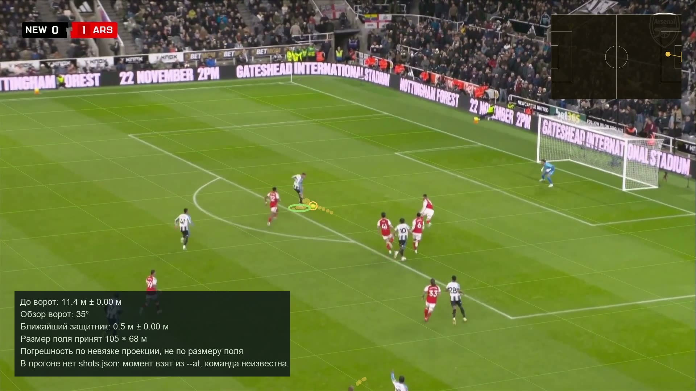

ФОРМА КОМАНД
Динамика по матчам
Сравнение по предыдущим играм до учебного матча.
СеверОрбитаГолов за матч
Матчи сгруппированы по порядку, а не по общим датам. Все значения условные.
Фрагмент футбольной трансляции · 17 секунд · данные требуют проверки

Учебный матч · сравнение игровых показателей
Сравнение по предыдущим играм до учебного матча.
Матчи сгруппированы по порядку, а не по общим датам. Все значения условные.
Показатели одного вымышленного матча.
Доли полос показывают соотношение двух значений по каждой строке.
Учебная история, не реальные результаты.
| Матч | Соперник | Счёт | Удары | Владение | Итог |
|---|
Счёт указан с позиции выбранной команды. Последний матч — справа на графике.
Север нанёс 12 ударов, из них 5 в створ. Стоит разобрать качество завершения.
Орбита выполнила 277 точных передач из 350. Посмотрите, где возникали потери.
Север вошёл в атакующую треть 24 раза. Какие входы завершались ударом?
Остановите видео и отметьте момент на кадре.
Разметка сохранится только в этом браузере.
Навигационные отметки в записи, не автоматическая разметка матча.
Для этого фрагмента данные не были предоставлены.
Вымышленные команды и условия. Они не относятся к видео.
1 Максим Орлов · ВР
2 Кирилл Беляев · ЗАЩ
4 Денис Фролов · ЗАЩ
5 Никита Миронов · ЗАЩ
18 Артём Корнеев · ЗАЩ
6 Илья Давыдов · ПЗ
8 Матвей Громов · ПЗ
10 Андрей Зорин · ПЗ
7 Роман Тихонов · НАП
9 Павел Ветров · НАП
11 Егор Смирнов · НАП
1 Иван Лапин · ВР
3 Алексей Романов · ЗАЩ
4 Никита Ершов · ЗАЩ
5 Максим Данилов · ЗАЩ
17 Даниил Фомин · ЗАЩ
6 Арсений Голубев · ПЗ
8 Сергей Котов · ПЗ
14 Игорь Серов · ПЗ
7 Степан Волков · НАП
9 Александр Морозов · НАП
11 Тимофей Зайцев · НАП